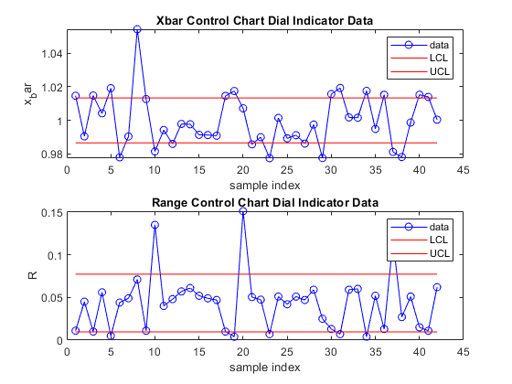

Contents
Wesley Schumacher & Adam Bradshaw & Thomas Hart
MCEN 4026 Manufactoring Spring 2020 SPC Lab
clc; close all; clear all;
Dial Indicator
DialIndicatorData = importfile("C:\Users\wesle\Documents\CU Boulder Fall 2020\MCEN 4026 Mfg Processes & Systems\SPCLab\RawData_F20.xlsx", "Dial Indiicator Raw Data", [5, 14]); DialIndicatorData = table2array(DialIndicatorData(:,2:43)); %Constants for Control Charts from Table 36.2 n = 10; A2 = 0.308; D3 = 0.223; D4 = 1.777; d2 = 3.078; %Hieght Gage Data %Averaging the samples xbar1 = meancalc(DialIndicatorData); %Average the average of the samples xbarbar1 = sum(xbar1)/ length(xbar1); %Average of the range values R1 = Rcalc(DialIndicatorData); %Average the average of the range values Rbar1 = sum(R1)/ length(R1); %Calculating Upper and Lower contorl limits using function call UCLx1 = UpperControlLimitx(xbarbar1,A2,Rbar1); LCLx1 = LowerControlLimitx(xbarbar1,A2,Rbar1); %Calculating Upper and Lower range contorl limits UCLr1 = D4 * Rbar1; LCLr1 = D3 * Rbar1; %Solving for Sigma sigma1 = Rbar1/d2; %Measure of Potiential capability Cp1 = (1.015-1.000)/(6 *sigma1); %Measure of Actual Capability Cpk1 = min((xbarbar1-1.000)/(3*sigma1), (1.015-xbarbar1)/(3*sigma1)); %printing Cp and Cpk values fprintf(' Dial Indicator Data Cp value: %f & Cpk value: %f \n', Cp1,Cpk1); figure('Name', 'Dial Indicator Data') subplot(2,1,1) y = 1:42; %Creating a vector of 42 set at LCL and UCL values lclx1 = LCLx1*(ones(length(y), 1)); uclx1 = UCLx1*(ones(length(y), 1)); %ploting the xbar values along with the sample plot(y,xbar1,'-ob') hold on %ploting the LCL and UCL plot(y,lclx1,'r') plot(y,uclx1,'r') title('Xbar Control Chart Dial Indicator Data') xlabel('sample index') ylabel('x_bar') legend('data', 'LCL', 'UCL') subplot(2,1,2) %Creating a vector of 42 set to LCL and UCL range values lclr1 = LCLr1*(ones(length(y), 1)); uclr1 = UCLr1*(ones(length(y), 1)); %ploting the range values along with the sample plot(y,R1,'-ob') hold on %ploting the range: LCL and UCL plot(y,lclr1,'r') plot(y,uclr1,'r') title('Range Control Chart Dial Indicator Data') xlabel('sample index') ylabel('R') legend('data', 'LCL', 'UCL')
Dial Indicator Data Cp value: 0.176922 & Cpk value: -0.000202
Height Gauge Data
HeightGaugeData = importfile2("C:\Users\wesle\Documents\CU Boulder Fall 2020\MCEN 4026 Mfg Processes & Systems\SPCLab\RawData_F20.xlsx", "Height Gauge Raw Data", [5, 14]); HeightGaugeData = table2array(HeightGaugeData); %Constants for Control Charts from Table 36.2 n = 10; A2 = 0.308; D3 = 0.223; D4 = 1.777; d2 = 3.078; %Hieght Gage Data %Averaging the samples xbar1 = meancalc(HeightGaugeData); %Average the average of the samples xbarbar1 = sum(xbar1)/ length(xbar1); %Average of the range values R1 = Rcalc(HeightGaugeData); %Average the average of the range values Rbar1 = sum(R1)/ length(R1); %Calculating Upper and Lower contorl limits using function call UCLx1 = UpperControlLimitx(xbarbar1,A2,Rbar1); LCLx1 = LowerControlLimitx(xbarbar1,A2,Rbar1); %Calculating Upper and Lower range contorl limits UCLr1 = D4 * Rbar1; LCLr1 = D3 * Rbar1; %Solving for Sigma sigma1 = Rbar1/d2; %Measure of Potiential capability Cp1 = (1.015-1.000)/(6 *sigma1); %Measure of Actual Capability Cpk1 = min((xbarbar1-1.000)/(3*sigma1), (1.015-xbarbar1)/(3*sigma1)); %printing Cp and Cpk values fprintf(' Height Gauge Data Cp value: %f & Cpk value: %f \n', Cp1,Cpk1); figure('Name', 'Height Gauge Data') subplot(2,1,1) y = 1:39; %Creating a vector of 42 set at LCL and UCL values lclx1 = LCLx1*(ones(length(y), 1)); uclx1 = UCLx1*(ones(length(y), 1)); %ploting the xbar values along with the sample plot(y,xbar1,'-ob') hold on %ploting the LCL and UCL plot(y,lclx1,'r') plot(y,uclx1,'r') title('Xbar Control Chart Height Gauge Data ') xlabel('sample index') ylabel('x_bar') legend('data', 'LCL', 'UCL') subplot(2,1,2) %Creating a vector of 42 set to LCL and UCL range values lclr1 = LCLr1*(ones(length(y), 1)); uclr1 = UCLr1*(ones(length(y), 1)); %ploting the range values along with the sample plot(y,R1,'-ob') hold on %ploting the range: LCL and UCL plot(y,lclr1,'r') plot(y,uclr1,'r') title('Range Control Chart Height Gauge Data ') xlabel('sample index') ylabel('R') legend('data', 'LCL', 'UCL') function [x] = meancalc(data) %x_bar calculator(Average calculator) for i = 1:length(data(1,:)) x(i) = sum(data(:,i)) / length(data(:,1)); %x(i) = (data(1,i) + data(2,i) + data(3,i)) / 3; end end function [x] = Rcalc(data) %R_bar calculator(Range Average) for i = 1:length(data) x(i) = max(data(:,i))- min(data(:,i)); end end function [x] = UpperControlLimitx(x_bar_bar,A2,R_bar) %UCLx calculator x = x_bar_bar + A2 * R_bar; end function [x] = LowerControlLimitx(x_bar_bar,A2,R_bar) %LCLx calculator x = x_bar_bar - A2 * R_bar; end function RawDataF20 = importfile(workbookFile, sheetName, dataLines)
%IMPORTFILE Import data from a spreadsheet % RAWDATAF20 = IMPORTFILE(FILE) reads data from the first worksheet in % the Microsoft Excel spreadsheet file named FILE. Returns the data as % a table. % % RAWDATAF20 = IMPORTFILE(FILE, SHEET) reads from the specified % worksheet. % % RAWDATAF20 = IMPORTFILE(FILE, SHEET, DATALINES) reads from the % specified worksheet for the specified row interval(s). Specify % DATALINES as a positive scalar integer or a N-by-2 array of positive % scalar integers for dis-contiguous row intervals. % % Example: % RawDataF20 = importfile("C:\Users\wesle\Documents\CU Boulder Fall 2020\MCEN 4026 Mfg Processes & Systems\SPCLab\RawData_F20.xlsx", "Dial Indiicator Raw Data", [5, 14]); % % See also READTABLE. % % Auto-generated by MATLAB on 20-Oct-2020 13:33:55
Input handling
% If no sheet is specified, read first sheet if nargin == 1 || isempty(sheetName) sheetName = 1; end % If row start and end points are not specified, define defaults if nargin <= 2 dataLines = [5, 14]; end
Set up the Import Options and import the data
opts = spreadsheetImportOptions("NumVariables", 43); % Specify sheet and range opts.Sheet = sheetName; opts.DataRange = "A" + dataLines(1, 1) + ":AQ" + dataLines(1, 2); % Specify column names and types opts.VariableNames = ["VarName1", "VarName2", "VarName3", "VarName4", "VarName5", "VarName6", "VarName7", "VarName8", "VarName9", "VarName10", "VarName11", "VarName12", "VarName13", "VarName14", "VarName15", "VarName16", "VarName17", "VarName18", "VarName19", "VarName20", "VarName21", "VarName22", "VarName23", "VarName24", "VarName25", "VarName26", "VarName27", "VarName28", "VarName29", "VarName30", "VarName31", "VarName32", "VarName33", "VarName34", "VarName35", "VarName36", "VarName37", "VarName38", "VarName39", "VarName40", "VarName41", "VarName42", "VarName43"]; opts.VariableTypes = ["double", "double", "double", "double", "double", "double", "double", "double", "double", "double", "double", "double", "double", "double", "double", "double", "double", "double", "double", "double", "double", "double", "double", "double", "double", "double", "double", "double", "double", "double", "double", "double", "double", "double", "double", "double", "double", "double", "double", "double", "double", "double", "double"]; % Import the data RawDataF20 = readtable(workbookFile, opts, "UseExcel", false); for idx = 2:size(dataLines, 1) opts.DataRange = "A" + dataLines(idx, 1) + ":AQ" + dataLines(idx, 2); tb = readtable(workbookFile, opts, "UseExcel", false); RawDataF20 = [RawDataF20; tb]; %#ok<AGROW> end
end function RawDataF20S1 = importfile2(workbookFile, sheetName, dataLines)
%IMPORTFILE Import data from a spreadsheet % RAWDATAF20S1 = IMPORTFILE(FILE) reads data from the first worksheet % in the Microsoft Excel spreadsheet file named FILE. Returns the data % as a table. % % RAWDATAF20S1 = IMPORTFILE(FILE, SHEET) reads from the specified % worksheet. % % RAWDATAF20S1 = IMPORTFILE(FILE, SHEET, DATALINES) reads from the % specified worksheet for the specified row interval(s). Specify % DATALINES as a positive scalar integer or a N-by-2 array of positive % scalar integers for dis-contiguous row intervals. % % Example: % RawDataF20S1 = importfile("C:\Users\wesle\Documents\CU Boulder Fall 2020\MCEN 4026 Mfg Processes & Systems\SPCLab\RawData_F20.xlsx", "Height Gauge Raw Data", [5, 14]); % % See also READTABLE. % % Auto-generated by MATLAB on 20-Oct-2020 14:03:55
Input handling
% If no sheet is specified, read first sheet if nargin == 1 || isempty(sheetName) sheetName = 1; end % If row start and end points are not specified, define defaults if nargin <= 2 dataLines = [5, 14]; end
Set up the Import Options and import the data
opts = spreadsheetImportOptions("NumVariables", 39); % Specify sheet and range opts.Sheet = sheetName; opts.DataRange = "B" + dataLines(1, 1) + ":AN" + dataLines(1, 2); % Specify column names and types opts.VariableNames = ["VarName2", "VarName3", "VarName4", "VarName5", "VarName6", "VarName7", "VarName8", "VarName9", "VarName10", "VarName11", "VarName12", "VarName13", "VarName14", "VarName15", "VarName16", "VarName17", "VarName18", "VarName19", "VarName20", "VarName21", "VarName22", "VarName23", "VarName24", "VarName25", "VarName26", "VarName27", "VarName28", "VarName29", "VarName30", "VarName31", "VarName32", "VarName33", "VarName34", "VarName35", "VarName36", "VarName37", "VarName38", "VarName39", "VarName40"]; opts.VariableTypes = ["double", "double", "double", "double", "double", "double", "double", "double", "double", "double", "double", "double", "double", "double", "double", "double", "double", "double", "double", "double", "double", "double", "double", "double", "double", "double", "double", "double", "double", "double", "double", "double", "double", "double", "double", "double", "double", "double", "double"]; % Import the data RawDataF20S1 = readtable(workbookFile, opts, "UseExcel", false); for idx = 2:size(dataLines, 1) opts.DataRange = "B" + dataLines(idx, 1) + ":AN" + dataLines(idx, 2); tb = readtable(workbookFile, opts, "UseExcel", false); RawDataF20S1 = [RawDataF20S1; tb]; %#ok<AGROW> end
end
Height Gauge Data Cp value: 0.203282 & Cpk value: 0.019212